bmo is a self-improving AI coding agent that runs in your terminal. It uses LLM-powered tool execution to complete tasks, and autonomously builds new tools and skills when it encounters limitations.

src/
├── main.ts # Entry point
├── tui.ts # Terminal UI
├── agent-loop.ts # Streaming agent loop
├── llm.ts # Multi-provider LLM client
├── tools.ts # Tool registry
├── tool-loader.ts # Dynamic tool loading
├── sandbox.ts # Sandboxed execution
├── skills.ts # Skill system
├── context.ts # Context management
├── tiering.ts # Model tiering
├── config.ts # Configuration
├── session.ts # Session persistence
└── prompt.ts # System prompt assemblygit clone https://github.com/joelhans/bmo-agent.git
cd bmo-agent
bun install
bun run build
bun run install# Run bmo
bmo
# Add API key
bmo key add openai
# Resume a session
bmo --session
# Force maintenance
bmo --maintain Very high relevance — This is exactly what we want: a self-improving coding agent.
cloned-repos/bmo-agent/
bun install